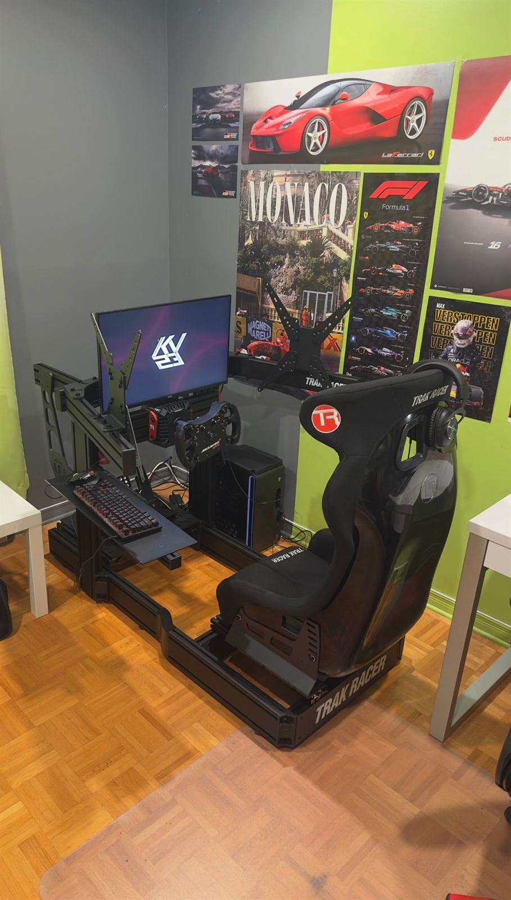
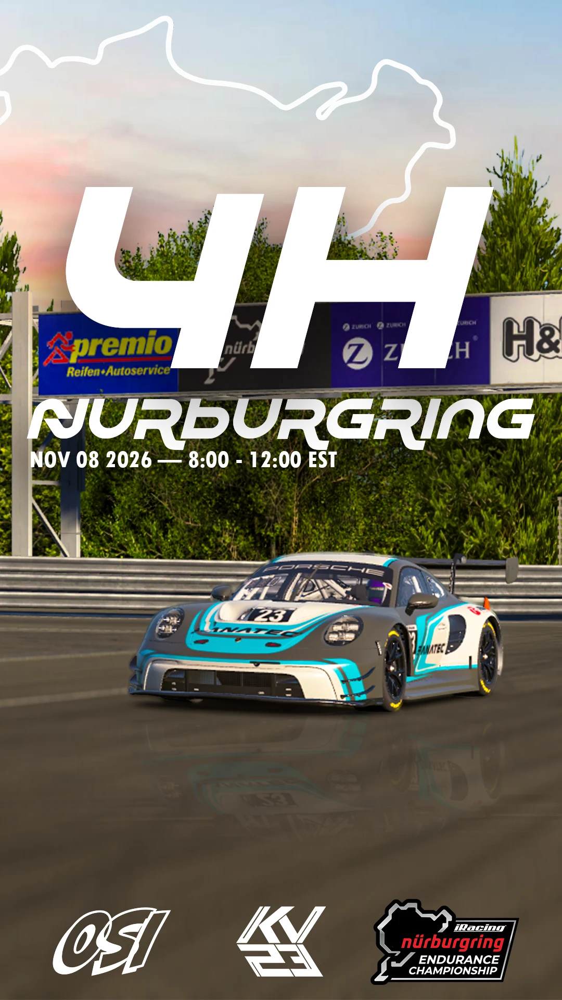
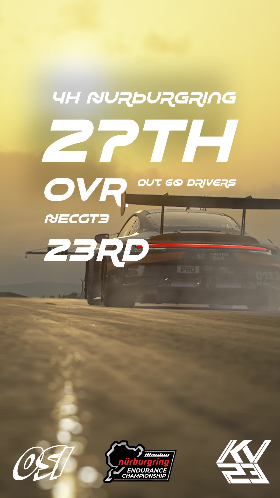
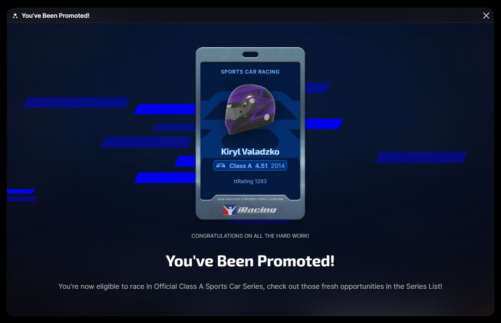

ON TRACK
iRacing · Sports Car. From the Porsche Cup to the GT3 Regional Tour, one split at a time, with every session on the rig logged along the way.
- 0Laps driven
- 0Sessions driven
- iRacingMost played game
- ALicence · Sports Car
- Getting readyGloves on, into the seat.

The officeWhere the 4,938 laps happen.
01 The numbers · as of Nov 9, 2026
176 starts,
19 wins.
Sports car only, every official race since I started on iRacing. Nineteen wins from 176 starts, and a pole in more than one race in ten. The number I'm working on now is the last one in the grid: incidents. Fast is good, but clean is what gets you promoted.
02 iRating · Sports Car
From 905
to 2000+.
Last December I hit 905, my lowest. It took ten months to get past 2000, and most of it came in two pushes: the summer season, worth +421, and October's Porsche Cup races at Sebring and Mount Panorama. Since then it has held around 2000, through GT3 and a four-hour team race.
- Low905Dec 2025
- Summer season+421Jul 08 – Aug 07
- PromotedClass ANov 2026
Traced from the iRacing profile chart · hover or drag to scrub
03 Licence progression
C to B to A,
promoted twice.
iRating says how fast you are; safety rating says how clean. I went from C to B in October, then from B to A in a single race at the Nürburgring, where every one of the Nordschleife's corners counts.
-
Jul 08 – Aug 07
Class C
- SR
- 2.82 +1.15
- iR
- 1917 +421
-
Before promotion
Class C
- SR
- 3.62
- iR
- 2027
-
Promoted · Oct 2026
Class B
- SR
- 3.50
- iR
- 2078
-
Before the 4H Nürburgring
Class B
- SR
- 2.70
-
Promoted ★ Nov 8, 2026
Class A
- SR
- 4.51 +1.81
- iR
- 2014
04 GT3 progression
First GT3 race
to first GT3 win.
The GT3 Regional Tour was a big step up: 11 races in four days in the Porsche 911 GT3 R (992), with some splits above 3,000 strength of field. The first two days were rough, including a race that went from P2 to P17. Then came a podium in race four, and in race nine a win at Imola from pole, with one incident.
GT3 Regional Tour by SensitHaptics · Europe
Porsche 911 GT3 R (992) · Imola · Grand Prix · 2026 S4 · Week 5
FinishStartRaces numbered first to latest
| # | Race | Start | Finish | Inc | Pts | SoF |
|---|
Official races only, from the iRacing results list; practice sessions left out. Pts = championship points for the race, SoF = strength of field.
05 First team race · Nov 8, 2026
Four hours of
the Nordschleife.
I started the day on 2.7 safety rating. Nineteen laps of the Nordschleife later, I was Class A.
My first team race: the 4 hours of the Nürburgring in iRacing's Nürburgring Endurance Championship, the Nordschleife and GP track combined, sharing an OSI Racing Team Porsche with a friend. Practice was wet, qualifying was dry with puddles everywhere, and I qualified P20 out of 60.
I started on wets and climbed to P8 in the first hour. A spin at the chicane before the Nordschleife dropped us to P16 at the first driver change. A dry line was forming and a few teams went to slicks, so we did too. It didn't work out: a spin, a 10-minute tow, then a crash, and we fell to P37.
Back in the car, with clear track and similar tyres and fuel, I was lapping up to five seconds quicker than the leaders until the rain came back. I spun two laps from the end of my stint and limped to the pits instead of taking another 10-minute tow. After more repairs I took the car for the last hour, all the way to the flag.
- QualifyingP20Out of 60 cars · P19 in NEC GT3
- Best in the raceP8First stint, on wets
- FinishP27Overall · P23 in NEC GT3
- LicenceA · 4.51Up from Class B, 2.70 SR

Race dayNov 8, 8:00 to 12:00 EST.
The result27th overall, 23rd in class.
You've been promotedClass A, 4.51 SR, 2014 iRating.
Split 10 · strength of field 1,712 · the leaders did 26 laps; I drove 19 of ours. iRacing counts safety rating per corner, and the Nordschleife has a lot of them.
06 Track Titan · Nov 9, 2026
Top 1%
in the world.
Track Titan is the telemetry coach I use: it records every lap, lines it up against faster drivers corner by corner, and ranks everyone on one global rating. Mine started at 328 in March. In the first week of November I spent five days at the Red Bull Ring in the Formula RSS 4 in Assetto Corsa, took half a second off my best lap and finished second on the hotlap leaderboard. That week took my rating from about 500 to 928: 62nd in the world.
- World ranking#62Top 1% · Gold
- Hotlap leaderboardP2Red Bull Ring · Formula RSS 4
- To World Champion level73Rating points to go
Traced from the Track Titan rating chart · hover or drag to scrub
- Best lap1:30.974Red Bull Ring · Formula RSS 4 · Nov 5, 2026
- LeaderboardP20.554 s off the fastest lap
- In five days−0.493 sFrom 1:31.467 on Nov 1
- That week300+ lapsHotlaps and races, Nov 1 to 5
Best lap each day · gap to P1 (1:30.420)
- Nov 11:31.467+1.047
- Nov 21:31.437+1.017
- Nov 31:31.082+0.662
- Nov 41:31.094+0.674
- Nov 51:30.974+0.554
Track Titan lifetime: 4,938 laps and 2,760 sessions. Most driven: Monza GP, in the Porsche 911 Cup (992.2).
Before GT3 it was the Porsche Cup in the 911 Cup (992.2), at Sebring and Mount Panorama, in fields of 1,700 to 2,000 iRating. My iRating went up in four of those last five races, and that run pushed me over 2000.
Before GT3 · Porsche Cup
- Oct 8, 2026 · 6:45 PMPorsche CupMount PanoramaiR2025 +66SR3.86 +0.15
- Oct 7, 2026 · 10:45 PMPorsche CupMount PanoramaiR1972 +39SR3.58 +0.01
- Oct 6, 2026 · 8:45 PMPorsche CupMount PanoramaiR2015 +30SR3.77 +0.13
- Oct 4, 2026 · 10:45 PMPorsche CupSebring · InternationaliR1985 −42SR3.64 +0.02
- Sep 30, 2026 · 6:45 PMPorsche CupSebring · InternationaliR1750 +70SR3.51 +0.58